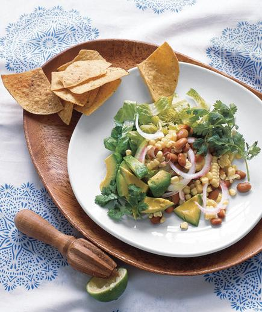

Salad With Corn and Avocado

Ingredients
- 2 small heads romaine lettuce, cut into bite-size pieces (about 12 cups)
- 1cup corn kernels (cut from 1 to 2 ears, or frozen and thawed)
- 2 avocados, cut into 1-inch pieces
- 115.5-ounce can pinto beans, rinsed
- 1/2 red onion, thinly sliced
- 1/2cup fresh cilantro
- 1/4cup extra-virgin olive oil
- 1/4cup fresh lime juice
- 1/2teaspoon ground cumin
- kosher salt and black pepper
- 1/29-ounce bag tortilla chips
DIRECTIONS
In a large bowl, combine the lettuce, corn, avocados, beans, onion, and cilantro.
In a small bowl, whisk together the oil, lime juice, cumin, ¾ teaspoon salt, and ¼ teaspoon pepper.
Drizzle dressing over the salad and gently toss. Serve with the tortilla chips.